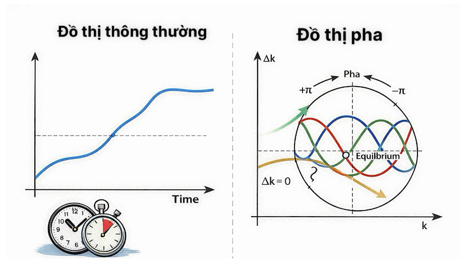
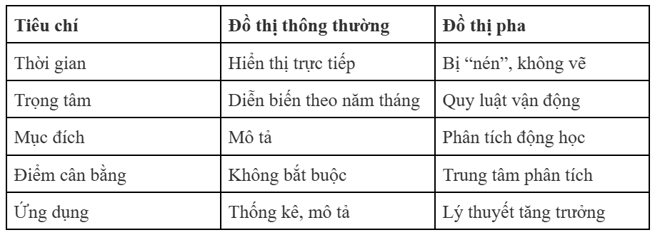

Vi phân được dùng để tính toán Năng suất biên của lao động (MPL) và vốn (MPK), đạo hàm của hàm sản xuất cho phép xác định tốc độ thay đổi của sản lượng khi một yếu tố đầu vào thay đổi. Công thức hạch toán tăng trưởng dùng vi phân để phân rã tăng trưởng sản lượng thành sự đóng góp của vốn, lao động và TFP.
Tốc độ thay đổi của sản lượng và các yếu tố đầu vào được phân tích chủ yếu thông qua khung khổ kế toán tăng trưởng (growth accounting) và hàm sản xuất. Dưới đây là các chi tiết cụ thể:v
a) Phương trình kế toán tăng trưởng:
Tốc độ thay đổi của sản lượng được phân rã thành sự đóng góp từ ba nguồn chính: năng suất, vốn và lao động. Theo công thức kế toán tăng trưởng (thường dựa trên hàm sản xuất Cobb-Douglas):
• Tốc độ tăng trưởng sản lượng (ΔY/Y): Bằng tổng của tốc độ tăng trưởng năng suất (ΔA/A) và tốc độ tăng trưởng của các yếu tố đầu vào có trọng số.
• Đóng góp của Vốn: Được tính bằng 0,3×(ΔK/K), trong đó 0,3 là tỷ phần thu nhập của vốn.
• Đóng góp của Lao động: Được tính bằng 0,7×(ΔL/L), với 0,7 là tỷ phần thu nhập của lao động.
b) Vai trò của từng yếu tố đầu vào:
• Vốn vật chất (K): Tốc độ thay đổi của vốn phụ thuộc vào tỷ lệ đầu tư và tỷ lệ khấu hao. Trong dài hạn, mặc dù tích lũy vốn giúp tăng sản lượng, nhưng do quy luật năng suất cận biên giảm dần, việc chỉ tăng vốn mà không có sự cải tiến công nghệ sẽ khiến tốc độ tăng trưởng sản lượng chậm lại và tiến về trạng thái dừng.
• Lao động (L) và Vốn nhân lực (H): Tăng trưởng số lượng lao động (do tăng trưởng dân số) làm tăng tổng sản lượng nhưng có thể làm giảm sản lượng trên mỗi công nhân do hiện tượng "pha loãng vốn". Tuy nhiên, việc cải thiện vốn nhân lực (thông qua giáo dục và kỹ năng) đóng góp tích cực vào tốc độ tăng trưởng sản lượng thực tế.
• Năng suất tổng nhân tố (TFP - A): Đây là yếu tố quyết định sự thay đổi sản lượng mà không giải thích được bằng sự thay đổi của các yếu tố đầu vào vật chất. Các nguồn tài liệu chỉ ra rằng sự thay đổi của TFP (thường là do tiến bộ công nghệ) là nguồn gốc quan trọng nhất của sự thay đổi sản lượng trong dài hạn.
c) Các quan sát thực tế từ nguồn tài liệu
• Tại Hoa Kỳ: Từ năm 1948 đến 2013, tốc độ tăng trưởng sản lượng trên mỗi giờ làm việc đạt khoảng 2,5% mỗi năm. Trong đó, TFP đóng góp khoảng 2,0 điểm phần trăm (tương đương 80%) vào sự tăng trưởng này, trong khi tích lũy vốn và thay đổi thành phần lao động đóng góp phần nhỏ hơn.
• Sự khác biệt quốc gia: Tốc độ tăng trưởng sản lượng giữa các quốc gia khác nhau chủ yếu do sự khác biệt trong tốc độ tăng trưởng năng suất (TFP) hơn là do tốc độ tích lũy các yếu tố đầu vào. Ví dụ, khoảng 60% tốc độ tăng trưởng sản lượng của Ấn Độ trong một số giai đoạn được giải thích là do tăng trưởng năng suất.
• Tăng trưởng danh nghĩa và thực tế: Tốc độ tăng trưởng sản lượng thực tế cộng với tỷ lệ lạm phát sẽ xấp xỉ bằng tốc độ tăng trưởng sản lượng danh nghĩa (GDP danh nghĩa).
=> Tóm lại: sản lượng thay đổi dựa trên sự kết hợp giữa tăng trưởng số lượng các yếu tố đầu vào (vốn, lao động) và hiệu quả sử dụng các yếu tố đó (năng suất). Năng suất luôn được coi là động lực chính để duy trì tốc độ tăng trưởng sản lượng bền vững trong mọi mô hình kinh tế.
Là công cụ hình học (thường thấy trong mô hình Solow) biểu diễn mối quan hệ giữa vốn trên mỗi công nhân và sự tích lũy vốn ròng.
a) Bản chất và Mục đích
• Biểu diễn động lực học: Đồ thị pha không chỉ mô tả một trạng thái tĩnh mà tập trung vào tiến trình thay đổi. Trong mô hình tăng trưởng Solow, nó được dùng để minh họa cách nền kinh tế chuyển động từ bất kỳ điểm xuất phát nào hướng về trạng thái dừng (steady state).
• Xác định tính ổn định: Đồ thị này giúp xác định xem một điểm cân bằng là ổn định hay không ổn định bằng cách quan sát các "mũi tên" chỉ hướng vận động của biến số (ví dụ: tư bản trên mỗi công nhân k).
b) Các thành phần trong đồ thị pha (Ví dụ từ mô hình Solow)
Trong lý thuyết tăng trưởng, đồ thị pha thường biểu diễn mối quan hệ giữa mức tư bản hiện tại và sự thay đổi của nó. Các thành phần chính bao gồm:
• Đường đầu tư (s⋅y): Lượng tư bản mới được tạo ra từ tiết kiệm.
• Đường khấu hao và pha loãng tư bản ((δ+n)k): Lượng đầu tư cần thiết để giữ mức tư bản không đổi khi có khấu hao và tăng trưởng dân số.
• Điểm trạng thái dừng: Là giao điểm nơi đầu tư vừa đủ để bù đắp khấu hao và pha loãng tư bản. Tại đây, mức tư bản trên mỗi công nhân không còn thay đổi nữa (Δk=0).
ảnh
c) Quy luật vận hành (Cách đọc đồ thị)
Đồ thị pha cung cấp cái nhìn về hướng chuyển động của nền kinh tế:
• Khi nằm bên trái điểm trạng thái dừng: Đầu tư lớn hơn mức khấu hao, đồ thị sẽ chỉ ra rằng mức tư bản trên mỗi công nhân (k) đang tăng dần.
• Khi nằm bên phải điểm trạng thái dừng: Khấu hao lớn hơn đầu tư, đồ thị chỉ ra rằng mức tư bản đang giảm dần.
• Tính hội tụ: Đồ thị pha minh họa rõ nét hiện tượng hội tụ (convergence), tức là các nền kinh tế có cùng đặc điểm cơ bản sẽ có xu hướng tiến về cùng một mức thu nhập trong dài hạn, bất kể điểm xuất phát.
Trong khi đồ thị thông thường trải dài các biến số theo trục thời gian tuyến tính (ví dụ: tăng trưởng GDP qua các năm), đồ thị pha lại nén thời gian vào các quy luật vận hành hoặc góc pha, tập trung vào việc biến số đó đang ở đâu trong chu kỳ hoặc đang tiến về đâu so với điểm cân bằng.

- Đồ thị thông thường (time–series graph):
+ Bản chất:
Biểu diễn sự thay đổi của biến theo thời gian.
Thời gian là trục độc lập (trục hoành).
+ Trục:
Trục ngang: thời gian (năm, quý…)
Trục dọc: biến kinh tế (GDP, thu nhập, vốn…)
+ Cho biết:
Nền kinh tế đã đi như thế nào theo thời gian
Tốc độ tăng, giảm, biến động, xu hướng
+ Ví dụ:
GDP tăng qua các năm
Thu nhập bình quân đầu người theo thời gian
=> “Nền kinh tế tăng hay giảm theo năm tháng?”
- Đồ thị pha (phase diagram) trong tăng trưởng kinh tế:
+ Bản chất:
Không đặt thời gian lên trục
Thể hiện quy luật vận động nội tại của nền kinh tế
+ Trục:
Trục ngang: mức biến trạng thái (ví dụ: tư bản trên mỗi lao động k)
Trục dọc: sự thay đổi của biến đó (Δk hoặc k̇)
+ Cho biết:
Hệ thống đang ở đâu so với điểm cân bằng
Hướng vận động: tăng lên hay giảm xuống
Trạng thái dừng (steady state) và hội tụ
+ Ví dụ trong mô hình Solow:
So sánh đầu tư (s·y) với khấu hao + tăng dân số ((δ+n)k)
Xác định nền kinh tế sẽ tiến về mức tư bản dài hạn nào
=> “Nền kinh tế sẽ đi về đâu, bất kể đang ở thời điểm nào?”
Bảng so sánh:

a) Phân tích trạng thái ổn định và xu hướng dài hạn
Đồ thị pha là công cụ chính để xác định trạng thái dừng (steady state), điểm mà tại đó mức tư bản trên mỗi công nhân (k) không thay đổi.
• Cơ chế tự điều chỉnh: Biểu đồ minh họa rằng bất kể điểm xuất phát ban đầu là gì, nền kinh tế luôn có xu hướng vận động về trạng thái dừng. Nếu mức tư bản hiện tại thấp hơn trạng thái dừng, đầu tư sẽ lớn hơn mức cần thiết để bù đắp khấu hao, làm k tăng lên và ngược lại.
• Trực quan hóa: Tài liệu nhắc đến mô hình "bathtub" (bồn tắm) như một cách trực quan hóa trạng thái dừng, giúp hiểu rõ cách các dòng chảy đầu tư và khấu hao tương tác để giữ cho nền kinh tế ổn định.
b. Phân tích bẫy thu nhập trung bình (Sự hội tụ và phân kỳ)
Mặc dù thuật ngữ cụ thể "bẫy thu nhập trung bình" không xuất hiện trực tiếp trong văn bản, đồ thị pha giải thích lý do tại sao các quốc gia có thể bị kẹt ở mức thu nhập thấp hoặc không thể đuổi kịp các nước giàu:
• Hội tụ có điều kiện: Theo mô hình Solow, các quốc gia có cùng hàm sản xuất, tỷ lệ tiết kiệm và tốc độ tăng dân số sẽ hội tụ về cùng một mức sản lượng trên mỗi công nhân.
• Sự khác biệt về TFP và Thể chế: Đồ thị pha cho thấy nếu hai quốc gia có các yếu tố ngoại sinh khác nhau (như hiệu quả của hệ thống pháp lý hoặc mức độ tham nhũng), họ sẽ tiến tới các trạng thái dừng hoàn toàn khác nhau. Điều này giải thích tại sao một số quốc gia vẫn nghèo trong khi những nước khác trải qua "phép màu tăng trưởng".
c. Đánh giá tác động của chính sách kinh tế
Đồ thị pha cho phép các nhà kinh tế dự báo kết quả của các thay đổi chính sách thông qua việc quan dịch chuyển các đường đặc trưng:
• Thay đổi tỷ lệ tiết kiệm: Khi tỷ lệ tiết kiệm tăng, đường đầu tư dịch chuyển lên trên, dẫn đến một trạng thái dừng mới với mức tư bản và sản lượng trên mỗi công nhân cao hơn.
• Chính sách dân số: Sự gia tăng tốc độ tăng trưởng dân số làm đường khấu hao và pha loãng tư bản dốc hơn (xoay ngược chiều kim đồng hồ), dẫn đến mức trạng thái dừng thấp hơn.
• Thúc đẩy năng suất (TFP): Các chính sách khuyến khích nghiên cứu và phát triển (R&D) hoặc cải thiện hạ tầng làm dịch chuyển hàm sản xuất và đường đầu tư lên trên, tạo ra mức tăng trưởng vượt trội hơn cả mức tăng từ tích lũy tư bản thuần túy.
d. Ý nghĩa trong mô hình tăng trưởng hiện đại
Trong các mô hình tăng trưởng hiện đại như mô hình Romer, vai trò của đồ thị pha được mở rộng:
• Đường tăng trưởng cân bằng (Balanced Growth Path): Thay vì chỉ hướng tới một điểm tĩnh như mô hình Solow, đồ thị trong mô hình Romer mô tả một trạng thái mà công nghệ, tư bản và sản lượng cùng tăng trưởng ở một tỷ lệ ổn định.
• Tăng trưởng bền vững: Đồ thị pha trong mô hình hiện đại cho thấy tăng trưởng dài hạn không chỉ phụ thuộc vào vốn mà còn phụ thuộc vào việc phân bổ lao động cho nghiên cứu (R&D). Khác với vốn vật chất bị giới hạn bởi quy luật hiệu suất giảm dần, công nghệ (ý thức hệ) không có tính cạnh tranh, cho phép nền kinh tế duy trì tăng trưởng vĩnh viễn.
=> Tóm lại, đồ thị pha đóng vai trò như một "bản đồ động lực học", giúp xác định điểm cân bằng, giải thích sự khác biệt giàu nghèo giữa các quốc gia và là cơ sở để mô phỏng tác động của các chính sách vĩ mô.